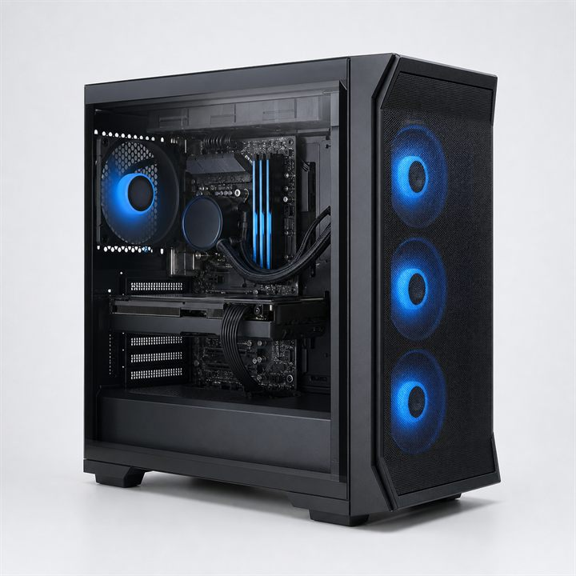

TC-001 · DISPONIBLE
PC Gamer Nova

Q8,995.00
Computadora de escritorio lista para jugar, transmitir y trabajar con aplicaciones exigentes. Combina rendimiento rápido, almacenamiento amplio y refrigeración eficiente en un gabinete compacto.
- Procesador
- AMD Ryzen 7 de 8 núcleos
- Memoria
- 16 GB DDR5
- Almacenamiento
- SSD NVMe de 1 TB
- Gráficos
- Tarjeta dedicada de 12 GB
- Código
- TC-001
Información de entrega
Entrega estimada de 2 a 4 días hábiles dentro del departamento de Guatemala. Información demostrativa.